Interacting with Rhino and Basic Geometrical Concepts
See this Rhino file and this Grasshopper file.
In this example, we will be looking at how we can place a tree, made with Rhino, on a surface, lofted in Grasshopper from Rhino curves. We will explore the the following important concepts:
- Referencing Rhino geometry
- Surface UVs
- Points
- Vectors
- Planes
Our grasshopper definition looks like this:
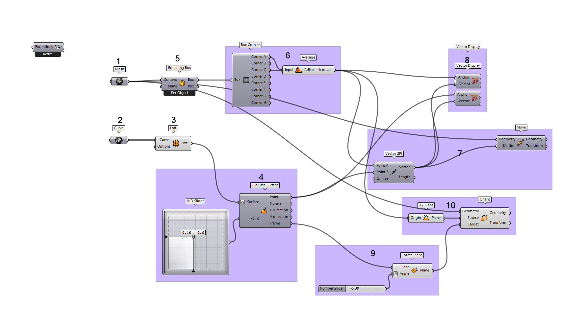
Our Rhino viewport will look like this:
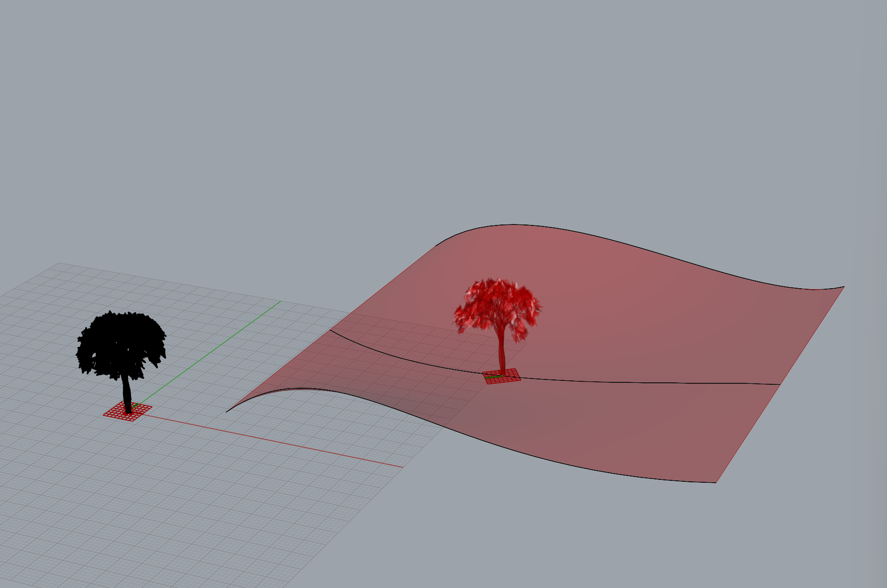
01 / 02 - Referencing Rhino Geometry
For the last definition we looked at, we created all of our geometry within Grasshopper itself, but usually it's easier to create geometry in Rhino and then bring it into Grasshopper. This is called referencing geometry.
For an in-depth look at referencing Rhino geometry, see this thorough write-up on Hopific.
03 - Interacting with Rhino Geometry
When you reference Rhino geometry in Grasshopper, you are creating a live link to that geometry. Changes that are made in Rhino will automatically update the referenced geometry in Grasshopper. Any downstream impacts within the GH definition will also update in real time.
In our case, after referencing our curves, we can move them around, scale them, adjust their control points, etc. and all changes will be reflected in Grasshopper.
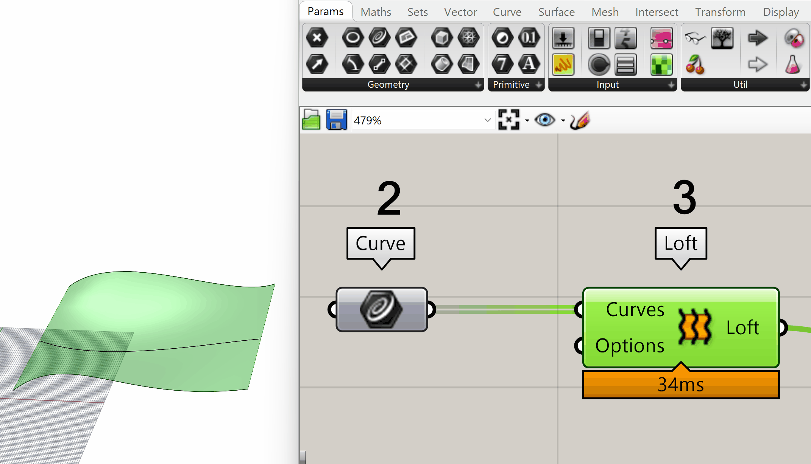
However, there are limitations to this live link. Grasshopper references geometry per Rhino object. If you were to split one of your referenced curves into two, Grasshopper would lose the link to the two resultant curves, as technically, two new objects are created in Rhino. In such a case, you will need to re-reference the new geometry.
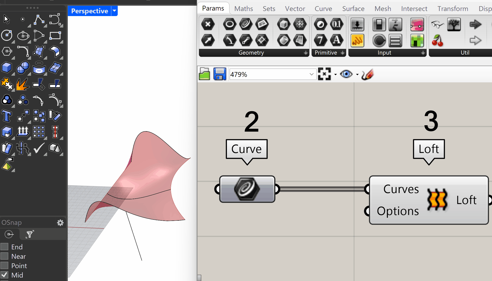
04 - Surface UV Coordinates
UV Coordinates - Overview
In Rhino, we are used to working with coordinates. In particular, we are used to working in a 3D Cartesian coordinate system composed of X values and Y values (the horizontal coordinates) and a Z value (the vertical coordinate). If we wanted to represent some points on our lofted surface as X,Y,Z coordinates, it would look something like:
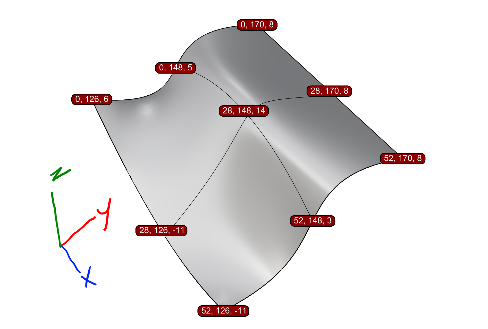
This X,Y,Z coordinate system is great for a lot of things, but gets a bit clunky when we want to describe a position on the surface itself. For example, the above image shows our center point of the surface as (28, 148, 14) but wouldn't it be much easier if we could describe our center point as (0.5, 0.5)? This is where a UV coordinate system comes into play. We can describe points on the surface with a UV coordinate system like so:
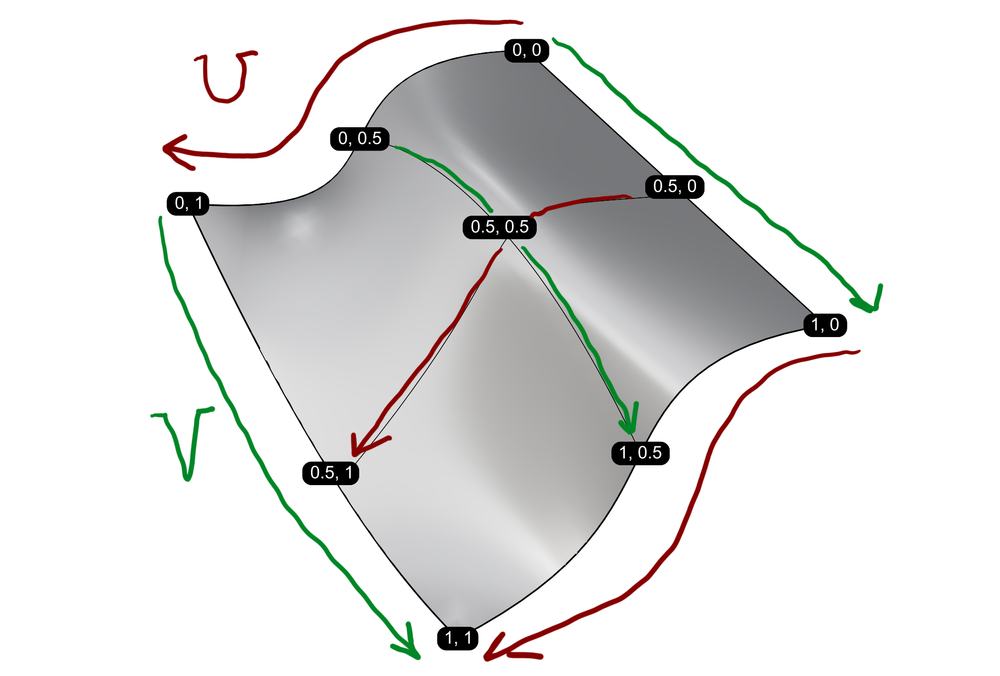
Since we are only working with U and V dimensions, we drop any notion of elevation. In other words, this coordinate system does not describe the waviness of the surface but only the position within the surface. If you want to form a mental image, imagine a gridded blanket where you consider the lines in one direction U, and the lines in the other direction, V. Those lines still describe the same positions on the blanket, even if they're wrapped around a dog!
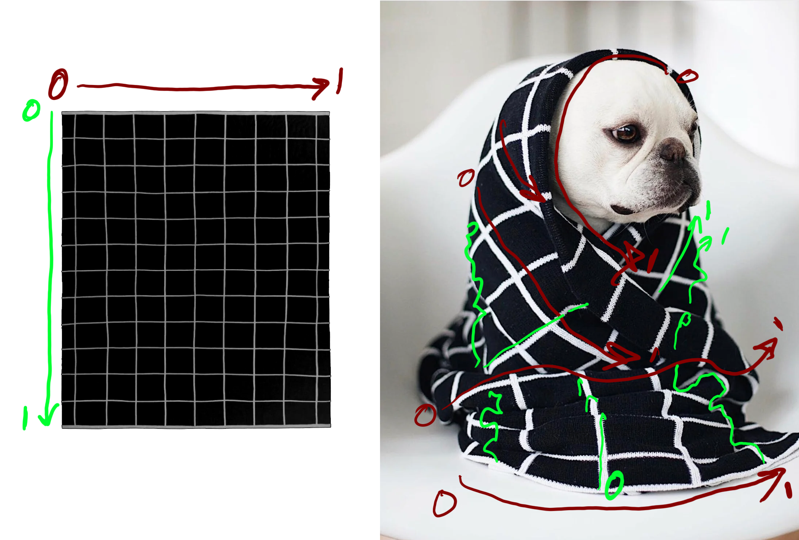
If you want to see those wavy lines in the Rhino screen, you can also run the command, _ExtractIsocurve.
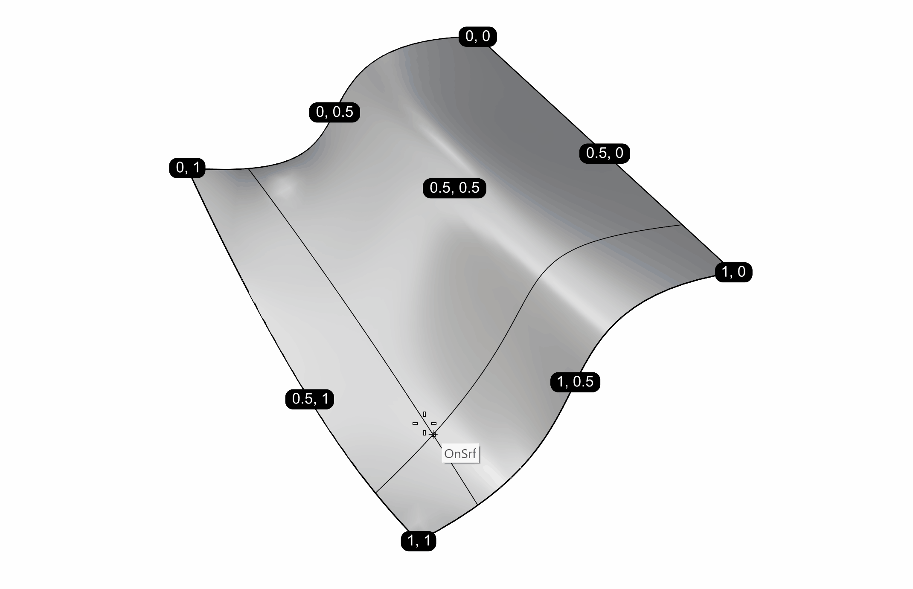
UV Coordinates - Reparameterization
In Grasshopper it is really useful to describe surfaces with UV coordinates ranging from 0 to 1 in both directions. It ensures that whatever wavy surface we pass into a component, we will be able to describe a location on that surface.
If we look back to the provided file's group 4 you can see that we're using the MD Slider to define a UV coordinate which we feed into the Point input of Evaluate Surface.
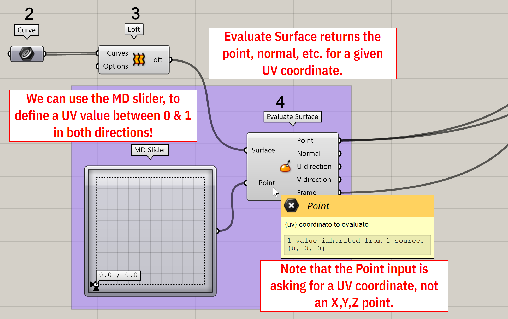
This makes sense so far given what we've learned about UV coordinates, but why do we only see a little wiggle when we move the MD Slider around? We see this behavior because Grasshopper, by default doesn't assign a range of 0 --> 1 to the UV directions of a surface. The UV values by default are based on XYZ values, or something like that, I think ... I've represented these random upper limits of UV with 1234 in the image below. In other words, it doesn't really matter what your initial UV system is, because you always want good old predictable 0 to 1!
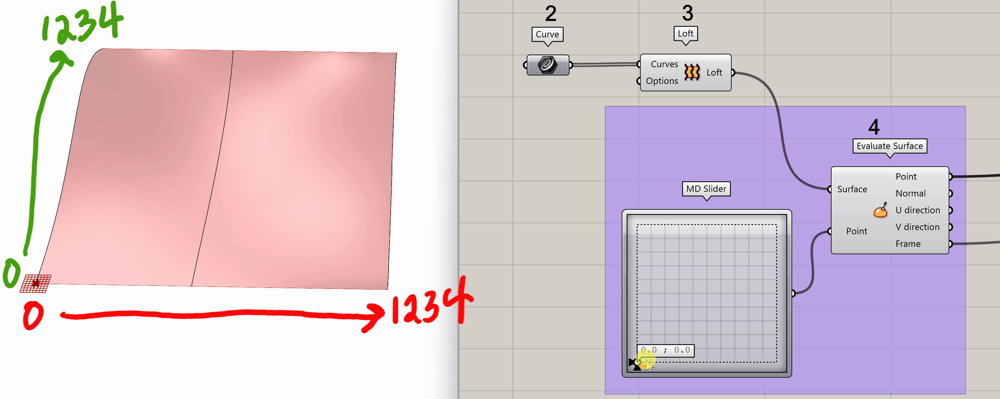
To convert our surface's UV ranges to 0 --> 1, we have to rmb the Surface input of Evaluate Surface and click Reparameterize. You will know see that UV coordinates output by MD Slider return the location on the surface that we would expect. Get used to reparameterizing surfaces all the time in Grasshopper!
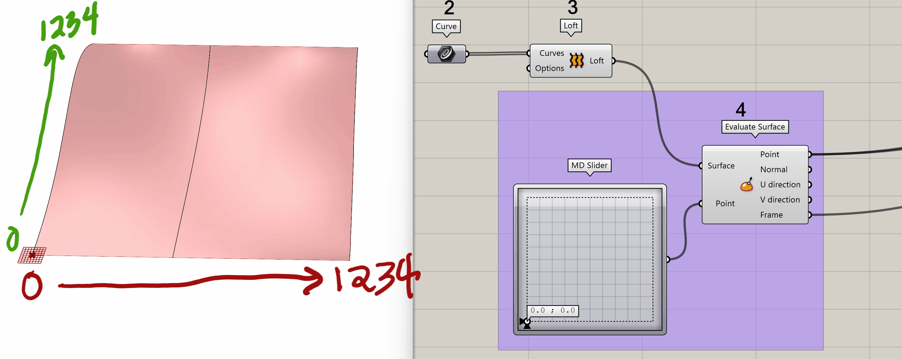
05 - Bounding Boxes
A Bounding Box is a plane-aligned box (a rectangular prism) that exactly contains the extents of a geometry. For example, in 2D, a bounding square would exactly describe the complex bounds of the below geometry like so:
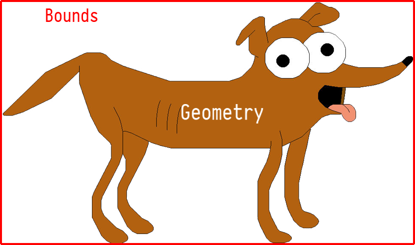
A bounding box extends this behavior to all 3 dimensions.
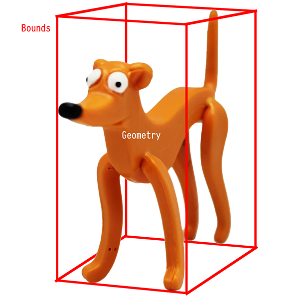
Bounding boxes are useful for getting general dimensions of an object, or getting generalized points, among other things. In this case we are going to grab two points for from the corners of a bounding box in order to find the middle base point.
06 - Points
Points represent a position in space. We've already encountered the concept of UV point where a point has a U value (0-->1) and a V value (0-->1), but in this section we will look at 3 dimensional points. The 3D point is the type of point you will most commonly encounter in day-to-day practice.
In step 6 of the example GH definition, we are first grabbing all the corners of the tree's Bounding Box with Box Corners. If we hover over the outputs of Corner A and Corner B, we will see that they return two points on the bottom of the box.
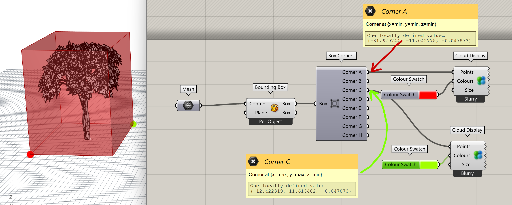
As we mentioned, 3D points have three dimensions: X, Y, and Z. The outputs A and B give us the point at X=Min, Y=Min, Z=Min and X=Max, Y=Max, and Z=Min respectively. This is how we know that the points are diagonal to each other. We can also hover over the ouputs and see the actual Rhino space coordinates of each point.
Since points are defined by 3 coordinates each, we can perform a bit of math on them to compose new points. In the second part of step 6, we use Average to find the point in between the two corner points.
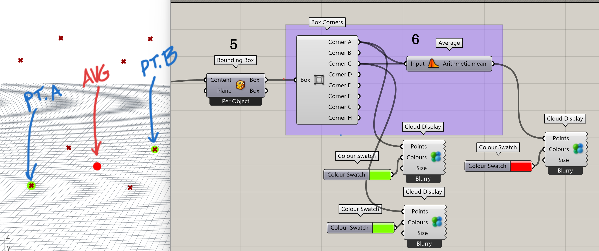
This works because we are averaging each coordinate. For example, two points \([0,0,0]\) & \([1,1,0]\) would give us \([(0+1)/2,(0+1)/2,(0+0)/2] = [0.5,0.5,0]\)
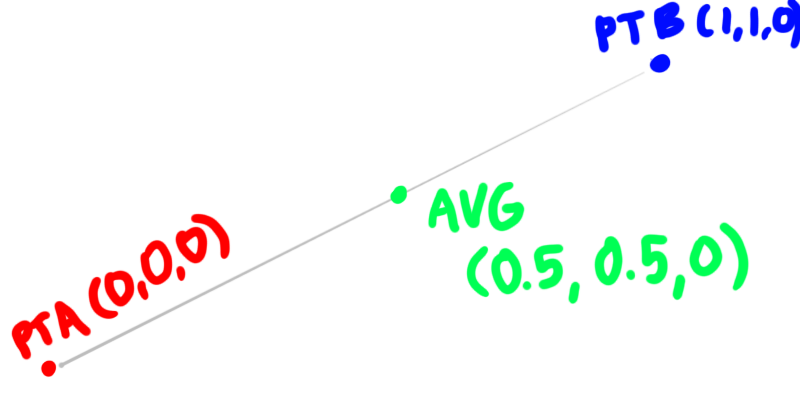
Points are closely related to, but not the same as, the next topic, Vectors.